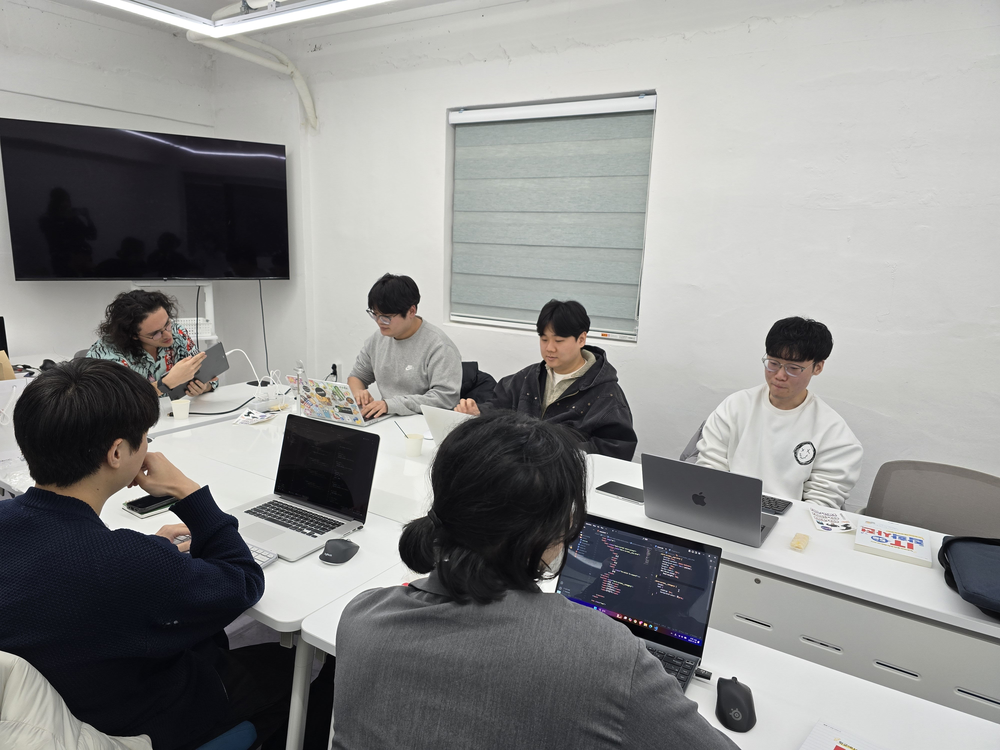
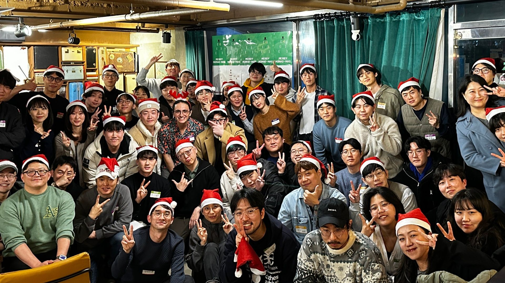

2023.06
SW중심대학 공동해커톤
OpenPose 기반 재활 동작 보조 서비스 Pose Pro의 프론트엔드를 담당하고 한글과컴퓨터 후원기업상을 수상했습니다.
FRONTEND DEVELOPER · 2026
HTML에서 시작해 React, Next.js, React Router까지. 화면과 데이터가 연결되는 과정을 직접 구현하며 성장해 온 송종화입니다.
사용 기술
기술의 수보다 프로젝트에서 어떤 문제를 해결했는지를 중요하게 생각합니다.
학습 여정
각 카드는 당시 집중해서 공부한 기술과 어려웠던 지점을 기록합니다.
해당 기술의 프로젝트가 없습니다.
활동
추후 활동별 사진 폴더가 추가되면 같은 형식으로 확장할 수 있습니다.
OpenPose 기반 재활 동작 보조 서비스 Pose Pro의 프론트엔드를 담당하고 한글과컴퓨터 후원기업상을 수상했습니다.

서로의 코드를 보며 혼자 공부할 때 놓치던 다른 해결 방식을 배웠습니다.

취업 준비생, 현직 개발자, 프리랜서와 대화하며 개발자의 다양한 커리어를 접하고 시야를 넓혔습니다.